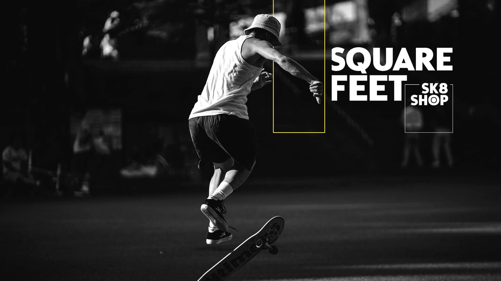

A medida que los años 80 dieron paso a los 90, los avances en la tecnología del hogar aumentaron el atractivo del skateboarding de manera exponencial, mientras que las formas de las tablas se estabilizaron en torno a la forma de paleta bidireccional ultrafuncional que domina en la actualidad.
Hoy en día, el skateboarding es uno de los deportes de acción más populares del mundo. Sus héroes son nombres familiares con seguidores gigantes. La escena del skate femenino también está en constante crecimiento. El skateboarding competitivo se ha vuelto tan avanzado en términos de dificultad y consistencia, que debutó en el escenario deportivo más grande del mundo, los Juegos Olímpicos, donde competidores de todo el mundo patinaron por medallas y gloria en las disciplinas de Street y Park.
Desde sus inicios el skateboarding ha incrementado el número de aficionados por todo el mundo, así como las competiciones que hay a nivel global y que acogen a los mejores skaters del mundo en distintas modalidades. Entre ellas están: Street League6, el campeonato de Tampa7 o el Battle at the Berrics8.
La disciplina Skate Street utiliza una combinación de obstáculos que pretende reflejar, a grandes rasgos, la arquitectura urbana sobre la que se creó este deporte: escaleras, barandillas, cornisas, bancos, etc.
El botonEl Skate Bowl está basado en la transición. Sus skateparks intercalan bowls (¡generalmente de hormigón duro como la roca!). En pocas palabras, imagina una serie de piscinas vacías donde se realizan trucos aéreos.
El botones una de las formas de patinar más antiguas y fue mayormente popular desde la década de 1960 hasta principios de la de 1990, cuando se llevó a cabo la competencia final de monopatinaje de freestyle.
El boton